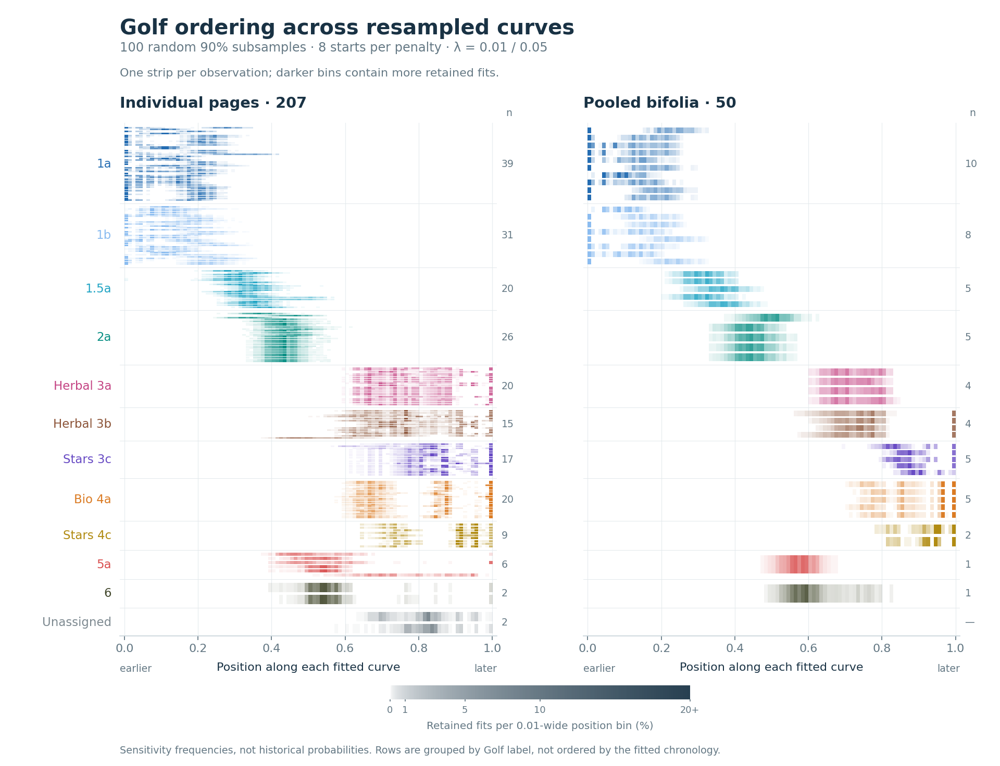
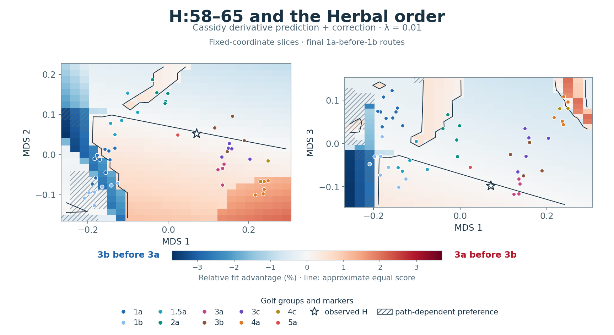
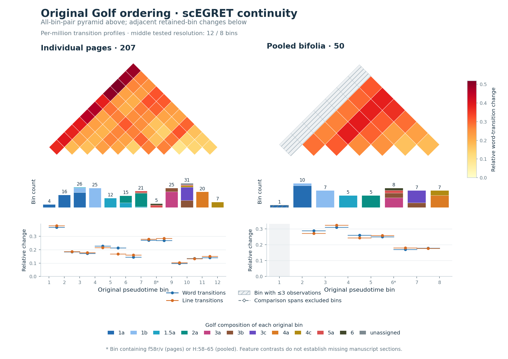
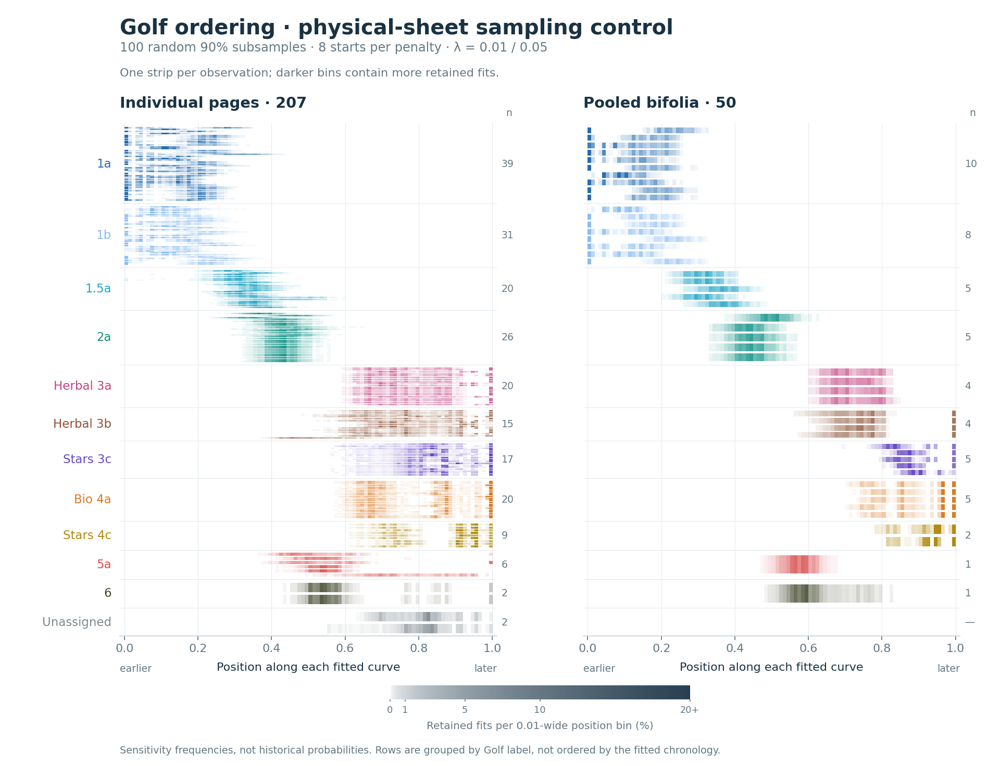
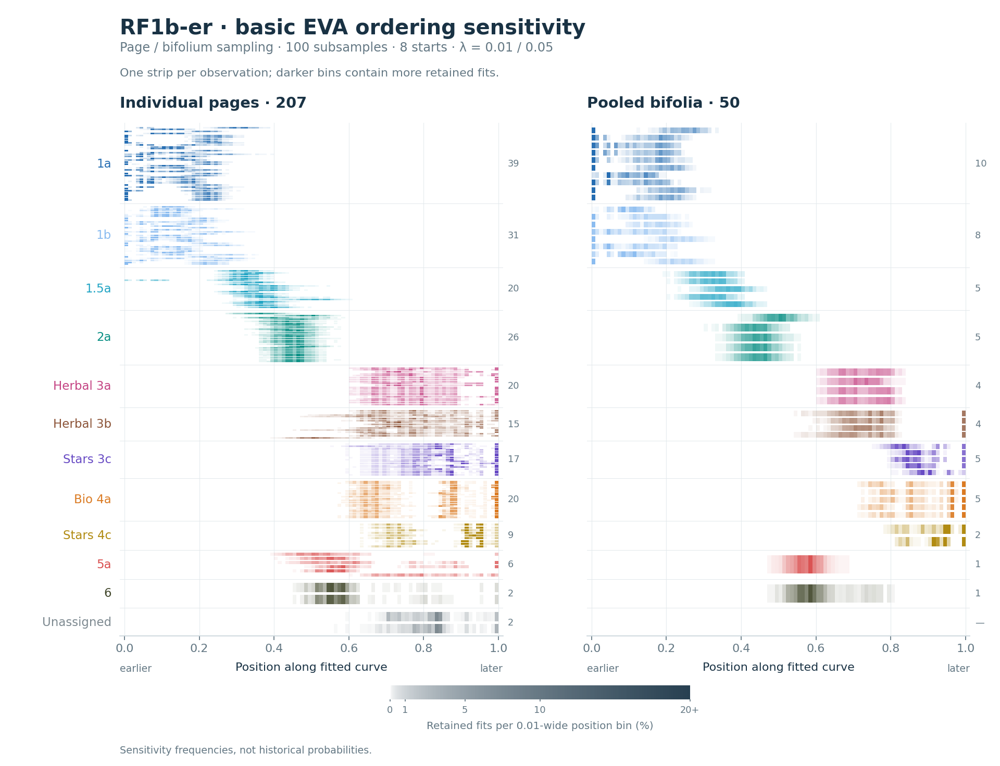
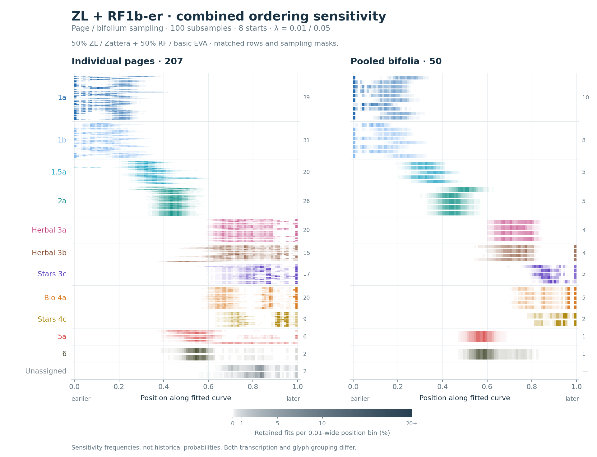

Golf chronology · 16 October 2026
Ordering uncertainty and the H frontier
Published principal-graph ensembles, derivative-based continuation and scEGRET continuity screening, with explicit text-data adaptations and numerical audits.
scEGRET calibration completed
The calibration does not robustly identify f58 as a discontinuity. Comparable two-sided contrasts occur in continuous controls, and known-gap detection is too weak under empirical sheet resampling to establish continuity from a negative screen.
Calibration findings and methods · Full control results · Calibration figure

New: removing f58 and astro/stars material — actual-page omissions, paired continuous controls, and the positive screens that depend on scaling and noise assumptions.
Ordering sensitivity

Each horizontal strip is one observed text unit or pooled bifolium. Color intensity records how often its fitted position lands in that interval. Starts and penalties have equal design weight regardless of fit quality; the report separately compares the best recovered scores. Separate dark areas preserve competing positions. These are empirical sensitivity frequencies, not historical probabilities.


H position and the Herbal ordering

Red favors 3a before 3b; blue favors 3b before 3a. The star is observed H:58–65. The line approximates equal recovered scores. Hatching marks places where the preference depends on the continuation route used to move H. Only the displayed coordinates change; lambda is 0.01.


scEGRET continuity of the original Golf route

The original scEGRET R calculation measures changes in transition features between position bins. Larger values mark sharper changes. Original bin numbers, occupancy and Golf composition remain visible, including bins too sparse for the calculation. A jump does not uniquely identify missing bifolia.


Physical-sheet sampling control
Paragraphs on one physical sheet are included or omitted together. This changes the sampling unit and is kept separate from the principal point-resampling figure.



Calculations and audits
Ensemble outcomes · Joint order comparisons · H continuation · scEGRET summary
Ensemble accounting audit · Independent ensemble replays · Independent continuation audit · Independent scEGRET audit
Study design · Ensemble details · Continuation details · Reproduction instructions
RF1b-er / basic EVA stability comparison
4,800 additional ElPiGraph fits use individual basic EVA characters, with the same 207 pages, 50 pooled bifolia, sampling masks, eight starts and penalties. All converged. The original ZL analysis uses Zattera glyph groups, so both transcription and unitization change.
The 3a/3b ambiguity persists: among the best recovered candidates with 1a before 1b, pooled bifolia at λ = 0.01 place 3a before 3b in 58/100 ZL samples versus 43/100 RF samples. Stars-before-Bio remains strongly preferred among best-scoring candidates. These are sensitivity counts, not historical probabilities.
Full RF comparison, methods, paired results and whole-sheet controls
Inspect individual bifolia and pages: distributions, paired comparisons and consensus ordering
RF1b-er separately

Both representations together
The combined chart averages retained-fit histograms 50:50, preserving alternative placements. Shared masks do not provide independent replications.
